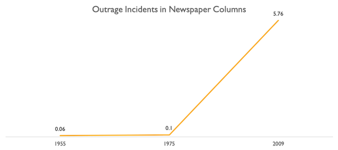

March 11, 2020: Harvey Weinstein is sentenced to 23 years in prison. The 67-year-old man in poor health
will most likely spend the rest of his life behind bars. October 5, 2017: The
Both the echoes of women’s voices speaking out against sexual harassment assault over the decades and deafening silence of the thousands more who suffered quietly for centuries were packed into the national discussion in the last two and a half years. The sentencing of disgraced Hollywood producer – the first criminal alleged in the spiral of allegations – is a symbolic victory for every single victim1 of sexual violence in the country. Why should it be for us, considering most victims are not eager actresses trying to break into Hollywood? It marks a milestone in transforming the vicious rape culture that all victims know too well. I’ll discuss why understanding sexual assault and rape as a society is so complicated.2
Rape is like murder, a monstrous act only committed by strangers. You don’t know any murderers. Or if you’re one of the very few people who does know one, you stay the hell away. Murderers aren’t normal people, and neither are rapists. So, the only logical conclusion is that you’re not friends with any rapists, just like how you’re not friends with any murderers. The only flaw in that otherwise perfect line of reasoning is that you know rape victims – a lot of them. 20% of women will be raped in their lifetime.
People’s cognitive dissonance will allow them to be supportive of and even empathize with their friends, who are made victims, while still having no trouble believing that their friends, who are rapists, are blameless. The rapist didn’t go into the evening with the intention of violating her, after all, and he really is a great friend. He’s loving in his relationships, needs intimacy like everyone else, and is honestly a little misunderstood. The problem with allowing these inconsistent ideas to coexist is that neutral isn’t neutral. Avoiding taking sides, being polite to or continuing friendships with both people, and “staying out of it” – these ideas are fantasies. Miel Bredouw succinctly and eloquently explains why in a tweet from November 2015:
in rape/abuse situations, there is no neutral. you have agency to help. non-action is painful to the victim, unnoticed by the abuser.
But the complication to my “Rape is like murder” simile is that murder doesn’t parade as some other ubiquitous and innocuous act. Rape can be written off as sex, and the intention behind the act may not even be harmful. A rapist might not acknowledge when they’re committing an act of sexual violence; after all, what they are doing is a pleasant activity that everyone engages in. What’s so violent about it? Murderers know when they’ve killed someone. Undisturbed, sexual abusers could spend their entire lives believing it was nothing worse than sex. In their TED talk, Tom Stranger speaks alongside his rape victim, Thordis Elva. He reflects on this event, 20 years later:
I disavowed the truth by convincing myself it was sex and not rape. And this is a lie I’ve felt spine-bending guilt for.
Another messy reality that people don’t like to acknowledge is that since there’s an innocent version of the same act, it’s extremely easy to disrespect someone else’s boundaries of consent. Society flirts dangerously with this boundary line in what it deems acceptable. Have you ever waited until you and the object of your secret affection had a few drinks before you made your move, because it would either be too awkward or you wouldn’t be brave enough otherwise? Do you accept and act on signs of lingering interest even after someone has outwardly rejected your advances? Have you always taken no for an answer after hearing it once, or do you keep trying, showing your interest through charming persistence? Consent is tricky to get perfectly right. I’m not arguing that people who’ve had these attitudes toward sexual advances deserve to be branded for life with a scarlet letter, but I am encouraging them to step back and acknowledge that this behavior is aggressive and selfish. And then provide the consolation that it’s fairly common and easy to change.
Another layer of complexity comes from the reality that sexual assault never happens in quite the way you want to picture it: in a secluded, darkened alley, behind a dumpster, by a stranger, to a resisting victim, where the event is reported to the police and all allegations are made instantly. No, in reality, most rapes occur indoors. It’s usually at or near the victim’s house, and by someone the victim knows. There is no one response to rape. Victims may stay in touch with their perpetrators. Their trauma doesn’t let them speak about the issue for sometimes decades. And yet, our society questions the credibility, validity, and motivations of allegations of rape that don’t match the perfect fantasy scenario outlined above. Of course, victims whose stories do closely fit the stranger-in-a-back-alley narrative are unanimously believed. But those whose don’t fit it must brave the incessant line of questioning from the entire country, if they ever muster up the astronomical amount of courage needed to tell their story in the first place.
Combine that with the idea that the court of public opinion should reflect the presumption of innocence upheld in criminal trial, and women are never believed. In a trial, it is the burden of the prosecution to bring forth convincing evidence. But where does one garner evidence from an event so far in the past? Our society is used to dismissing all cases that have no tangible proof as hearsay. And then there is pervasive fear of the threat of careers ending from just one false accusation, as if careers ever truly end or as if the frequency of people lying about victimhood is statistically significant.3
The underlying theme in the ideas presented here is that rapists are not sick monsters. They work at their daily jobs and crack jokes. They enjoy meaningful relationships with friends and significant others. They aren’t devoid of all emotion and they certainly aren’t cruel and violent for the sake of being cruel and violent; in their heads, their crime may even disguise itself as a beautiful, adventurous act of intimacy. And the sexual violence they commit are not monstrous acts that only happen in filthy locales to kicking and screaming strangers.
Sexual assault is nuanced and monsters don’t exist in the way we fear them. The faster we realize this, the easier it will be to collectively discard the notions we have that birth and incubate rape culture. And eventually, we won’t have unapologetic Harvey Weinsteins entering our prisons in the first place.
This article is a summary of my honors undergraduate thesis, for which I conducted research under Barrett, the Honors College and the School of Politics and Global Studies at Arizona State University.
Here, I discuss how the introduction of the internet and social media inevitably impacts already-tense relations between characteristically different groups and use a case study to illustrate how polarization impacts the digital vernacular.
Anyone with WiFi connectivity has a microphone and an easy platform to build his political standing. A campaigner, for example, can use the internet to bypass advertising paywalls, directly reach targeted audiences on forums designed to share content, and adjust message based on real-time feedback from the public.
But one of the largest pitfalls of having almost the entire human experience mapped onto the internet in our golden Information Age is having too many voices to hear and too much to choose from. There’s an inherent need for curation. In 1995, MIT researcher Nicholas Negroponte predicted the internet would become a "Daily Me," where each user would see content curated specifically for him. So, if you don’t really follow politics but love sports, you might see more news stories about last night’s basketball game and less about the current ongoing foreign power-grab.
The internet necessitates curation, and it occurs two ways: self-imposed and algorithmic. Does curation cause insulation from opposing ideas? And if so, can we fight it? Self-imposed curation occurs when we group together with like-minded individuals in our social circles. But this isn’t necessarily insulation, you say: 'It’s the internet. Opposing views are just a click away.'
Sounman Hong and Sun Hyoung Kim perform a study in 2016 with two alternative hypotheses for how we might interact over social media: cross-cutting interactions and echo chambers. The first describes the notion that exposure to and deliberation with people who hold challenging viewpoints is the norm. The second describes the notion that users surround themselves with the validation of louder "echoes" of their own opinions. The authors find evidence to reject the first hypothesis in favor of the latter, which supports the notion that we are indeed insulating ourselves, despite the internet’s ease of access. Unfortunately, it’s hard to fight. Even if you were to be vigorously active in including all viewpoints in your network, your content providers only show content you’re likely to engage with: more clicks = more time spent on a platform = more ad revenue. Your news feeds and results pages will filter content (and opposing ideas!) away from you that you don’t even realize you’re missing out on. Welcome to your Daily Me.
So, we know we’re insulated, and there isn’t much we can do to help it. What are the implications? In an insulated group of like-minded individuals, there’s a limited argument pool. Opposing viewpoints on an issue don’t make their way through the bubble. As individuals in the group offer more arguments in the same direction as pre-existing notions, the collective view shifts away from the median. Cass R. Sunstein calls this phenomenon group polarization.
Within each bubble, that effect strengthens individual group identities. We have a human instinct to defend our social groups. In-group loyalty births inter-group conflict, but criticisms of other groups don’t actually focus on the content of their arguments. Conflict stems from differences in backgrounds and beliefs; arguments aren’t policy-based, but "us vs. them"-based.1 Lilliana Mason terms this tendency social polarization.
Finally, inter-group rivalry fuels outrage.2 Outrage saturates traditional political media: talk radio, political blogs, cable news analysis programs, and newspaper columns. In a 2011 study of outrage in these four media outlets, Sarah Sobieraj and Jeffrey M. Berry define 13 forms of outrage and count incidents over a sample of the outlets. They find that nastiness occurs on both sides of the ideological spectrum, but that one group (conservative media) is more likely to use outrage language.
They also find that outrage culture is fairly new; newspaper columns from 1955 and 1975, despite their descriptions of tumultuous political events, follow a general etiquette of politesse.
The authors scrutinize various information providers, but traditional political media is uni-directional. What is outrage language like when lay-people transmit their own views? I seek to answer this question by taking to Twitter.
For my case study, I analyze the language used in the #MeToo movement. Why did I choose a hashtag, and why this one? Isolating an issue helps disambiguate words and provides insight into what Twitter users focus on. Hashtags are perfect for identifying an isolated issue and perfect for data collection. When using a hashtag, users self-sort their tweets as pertaining to a specific issue. Most movements, to add, spawn separate hashtags for opposing viewpoints on one issue (supporting the notion we have insulated conversations). #BlackLivesMatter spawned #AllLivesMatter. Democrats discussed healthcare using #ACA while Republicans used #ObamaCare. This branching of hashtags didn’t happen to such a scale for #MeToo, meaning different sides of the debate all shared their thoughts under the same hashtag, which is better for my particular analysis of measuring general outrage.
To examine polarizing and outrageous language, I need a benchmark for non-polarizing and non-outrageous language. I use articles regarding the #MeToo movement from the Wall Street Journal to this end because this publication is trusted by individuals across the entire political spectrum.
I use the metric of word similarity in my analysis. Groups of words that are used together frequently or retain the same thematic meanings are "similar." For instance, "queen" and "king" are similar because they fall under the same thematic category of royal rulers. "Donald" and "Trump" are similar because these words are used together frequently. Note that this metric will mark antonyms as being similar; it is not underlying semantic meanings that are similar among words, but rather their underlying contexts. Degrees of similarity between words, then, will be specific to which corpus is used.
I created two corpora of 83,412 tweets and 521 articles collected in March 2019. I analyze3 the most similar words to the same keywords in both corpora; I will discuss a selection here: The most similar word to our hallmark keyword, "metoo," on WSJ is "sexual-liberation." This result shows a focus on collective consequences of the movement; sexual-liberation is not an individual trait. It is a societal one. On Twitter, the most similar word is "horrifically," a word descriptive of an individualistic, personal experience.
An explosive issue on Twitter is whether presumption of innocence, historically used under due process for criminal cases, should be applied to alleged perpetrators in social and workplace settings. This is indicated by the extremely close proximity of the words, "innocent," "proven," and "guilty," characteristic of a frequently-used phrase: innocent unless proven guilty. Note that this conversation is largely absent on WSJ, where the most similar word to "guilty" is "statements." Deliberation over whether the public should reserve judgments until further evidence is found is not in itself outrageous or even negative, but Twitter users are having discussions about the motivations of victims who come forward with allegations.
The most similar word to "allegation" on WSJ is "complaint." Under the context, these are almost synonymous. However, on Twitter, the most similar word to "allegation" is "credible." The discussion on this platform shifts its focus away from the actual content of the allegations to the reliability of the victims. Dismissal of individuals’ arguments in lieu of discussions over their trustworthiness constitutes character assassination;4 several close words are "sensationalizing" and "weaponizing". Angry and suspicious Twitter users are taking to their keyboards to insist that victims and supporters of the movement have ulterior motives.
This method of analysis does not avoid ambiguity; the close relation of "hugging" to "victim" does not lend itself to a clear understanding of context. Is the Wall Street Journal reviewing actions of positive support for victims or a form of an unwanted advance they face in the workplace? Regardless, the word does not lend itself to nearly as emotional of a context as Twitter’s, where "survivor," is the most similar word to "victim." Twitter users focus less on collective consequences and more on individual experiences, and despite most of the public sentiment devolving into anger and suspicion, they do well in using empowering and empathetic language.
Had time and resources permitted, I would have loved to look at how language differs among individual groups. For the #MeToo movement, it would be interesting to scrutinize the commonalities and disparities between men and women, or liberals and conservatives. I would also like to perform sentiment analysis on the tweets to provide insights into the extent of polarization, empathy, and impartiality and gain a comprehensive understanding of the emotions at play; I was unable to reliably conduct this study using a pre-trained Python package.5 Future work in this vein would likely succeed given human annotations of sentiment for tweets in this corpus.
Can you name the odd one out: recliner, beanbag, parking cone, bench? Odds are you are able to boot "parking cone" from the three others which belong together as objects on which to sit. But it’s interesting that you are so easily able to do so; the quintessential recliner and beanbag couldn’t look more different than each other. They feel, smell, sound, and probably (though it’s not likely you have the real-life experience to prove it) taste different, too. If you imagine a chair in a similar way as I do, you may see in your mind’s eye a classic, wooden ladder-back. But thrones, barstools, recliners, beanbags, and benches still evoke an unquestionable chair-ness despite not tangibly being anything like a ladder-back.
The human brain is the most elegant and robust pattern recognizer and classifier in existence. The unique way we apprehend the world – abstracting, generalizing, and hierarchizing – should inspire the deep learning community in teaching machines to do the same.
Entities in our concrete world, paradoxically, often have ideal, abstract qualities which don’t correspond too well with their tangible realizations. This was a well-pondered idea by early philosophers, as seen in Phaedo:
Consider... whether this is the case: we say that there is something that is equal. I do not mean a stick equal to a stick or a stone to a stone, or anything of that kind, but something else beyond all these, the Equal itself. Shall we say that this exists or not? Indeed we shall, by Zeus... most definitely. And do we know what this is? Certainly. Whence have we acquired the knowledge of it? Is it not from the things we mentioned just now, from seeing sticks or stones or some other things that are equal…?
While you may not agree with every aspect of Plato’s Theory of the Forms – is our perceived world not as real or true as the absoluteness of the essential? – you can probably side with the idea that very much of what we experience in the world is registered and understood by the intellect instead of just the senses. To demonstrate, we have a solid understanding of what anger is from seeing plenty of examples in our own experiences. Though internet comments with excessive capitalization, curse words, and exclamation points read nothing like a subtly passive-aggressive text from a coworker, we can detect the same negative emotion in both. We comprehend a general, abstracted Form, Anger.1
Physiologically, abstraction happens much as Socrates described it here – one learns Equal by seeing smaller examples of equal sticks or equal stones. Evan Antzoulatos and Earl Miller use abstract category learning in a 2011 Neuron paper to examine activity in two neural regions: the prefrontal cortex, thought to be the brain’s chief of command for decision-making and goal-oriented behavior, and the striatum, a more primitive region. They found monkeys engaged this more primitive striatum when given small and easy-to-memorize examples, or "exemplars," of two categories. Once the categories’ exemplars became more complex, the prefrontal cortex activity overpowered; the sensory information moved to the more complex region of the brain, which needed to abstract patterns from the exemplars to create a general definition for the categories.
There’s psycholinguistic evidence for an organized structure to our categorization. Informational categories can be subdivided into smaller ones, such as "animal" into "bird" or "fish." One of the best-known studies is Allan Collins and Ross Quillian’s 1969 exploration in Journal of Verbal Learning and Verbal Behavior of whether semantic memory has a hierarchical model. Information retrieval from such a model, then, would take more effort as the number of steps up or down in the hierarchy increased; they measured peoples’ reaction times (to measure complexity of the mental process) when given questions such as "A canary can sing," "A canary can fly," and "A canary has skin," where can sing, can fly, and has skin are traits of canaries, birds, and animals, respectively. The mean reaction time increased for each question, supporting their hypothesis that it took extra mental steps to scan the traits of more general categories, given a specific one.2 A feature of this hypothesized structure is traits for "animal," such as has skin, eats, and breathes,3 won’t be stored as copies under "fish" and "bird." Only traits specific to the current category are stored in our memory,4 as well as the hierarchy of the model itself.
To recap, for our human brains to have gotten so good at abstraction, there was more involved than just seeing a wide array of examples. A complex region of the brain puts together the examples and stashes them away as being a part of a larger category. We love to generalize. So much so that our method of information retrieval involves a hierarchy of generalizations.
What if I told you there was a fundamental issue with how we train deep learning models today? Human learning happens, largely, through deductive reasoning, but it’s not into an arbitrary scattering of categories we learn. When we teach machines to learn, it’s crucial we employ these ideas, as well.
ImageNet is a standard, benchmark dataset of high-resolution images for deep learning. The explosively large dataset (with over 14 million images and counting!) has its labels organized into hierarchical categories. It employs the structure of WordNet, a lexical reference system which organizes English nouns, verbs, and adjectives by semantic relations. WordNet’s design, inspired by Collins and Quillian’s work, stacks sets of synonyms ("synsets"), each which represent one concept, into a hierarchy of relations: antonymy, hyponymy (IS-A relations), and meronymy (HAS-A relations). ImageNet’s labelling uses these IS-A relations among nouns. It impressively allows for disambiguated labels, where two meanings of one word do not interfere with image labelling. Images classified as plants, meaning, "living organism[s] lacking the power of locomotion" won’t be confused with those classified as plants, meaning, "buildings for carrying on industrial labor."
The original paper published for the 2009 IEEE Conference on Computer Vision and Pattern Recognition by Jia Deng et al. boasts higher accuracies for images when a classifier considers all child labels; for instance, in classifying an image, instead of considering the classification score of just "dog," it takes the max of the scores of "dog," "German shepherd," "English terrier," etc. The rationale behind this is straightforward – a prediction classifying a picture of a tree (correctly) as being a maple should not be dismissed for being too specific. The hierarchical labelling at such a mass scale proved to be a breakthrough in benchmarking complexity of models.5
Hierarchical organization is the best bet toward achieving the ability of abstracting patterns to generalize categories. If we want our models to understand the Form of Uncheerfulness as well as we do, we would like it to understand anger and anguish both fall under the umbrella.6 In a world where supervised deep learning will continue to be bogged down by needing massive amounts of examples, hierarchical labelling is a win for abstraction.
Despite ImageNet’s advantages, its labelling still has its shortcomings. Playing around with some resources ImageNet makes available, I discovered a key problem: ample opportunities for mislabeling.7 While the labels are organized hierarchically, acquiring images for each synset involves search queries of only words either in the target synset itself or in its parent synset, but the results could still differ largely from the intended meaning of the word. The images are annotated and labelled by Amazon Mechanical Turk workers, who are given the definition of the target synset. They are not provided with the hierarchy of the synset.8 Human error introduced from crowdsourced labels raises problems for truly disambiguated labelling. Consider the word, "beanbag." Its synset contains only the one word, with the WordNet gloss: "a small cloth bag filled with dried beans; thrown in games." Its direct ancestors are "bag" and "container." However, the ImageNet page for "beanbag" consists almost entirely of images of beanbag chairs. There is no "beanbag" synset under the entities, "furniture," "seat," or "chair." The result is a misclassification of all images queried under the entire synset for a different, more common, meaning of the same word (which happened not to have its own synset in WordNet). This kind of error would create instances of erroneous classification of both seats and containers, if, given an image of a man lounging in a beanbag chair at a campsite, the model predicts it is seeing a small bag. Another example of a synset where the instinctive, human association of the word (and thus image labelling) mismatches the gloss: artefact/artifact, "a man-made object taken as a whole," though ImageNet’s image collection of "artifacts" is almost exclusively remnants from ancient cultures. MTurk workers have little reason to realize they should really be labelling the data as "archaeological remains."
Still, despite my nitpicking after a day’s fooling around on ImageNet, I’m blown away by the elegance of its design. A great next step for the image-recognition community is to ensure our machines learn not only the labels of the examples it sees, but, by harnessing the structure, learn their place in a hierarchy, as well. When training a model to learn a specific category, we can include all images among descendent categories for more generalized classifiers, and in this way implicitly give the model the hierarchy.9 In other cases, the hierarchy might be able to be learned.6
Comprehending how an AI agent should learn the world and build models have laughably little to do with how our brains perform the same tasks. But it’s important we allow ourselves to take inspiration from them. Abstracting, generalizing, and hierarchizing are crucial to our learning, and they can help our machines’ learning, as well. If we consider these techniques seriously, we may find a world where better decisions are made – by both ourselves and our machines.